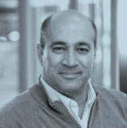
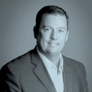
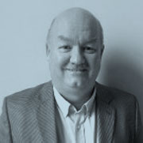
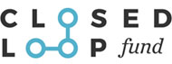

Company Highlights
- Founded in 2010
- 5,000 metric ton annual manufacturing capacity (under expansion)
- Based in Branford, Ontario
- Highly efficient process: 1 lb. of plastic waste = .94 lb. of specialty wax
- Producer of polyethylene and polypropylene waxes, modified polymers and specialty chemicals
- 60 employees
- Recipient of numerous industry awards, including 2016 R&D100 Gold Award for Green Technology
- Privately held
Management Team
-

Kousay Said – President & Chief Executive Officer
Kousay has more than 30 years of experience in the chemical industry with a career that spans multiple functions, technologies, geographies, and markets. Prior to joining GreenMantra, he served as the Chief Commercial Officer of Sirrus, Inc., and as the Chief Executive Officer of ZeroBase Energy, LLC, both startups focused on resource efficiency and advanced manufacturing. During his 20-year career at The Dow Chemical Company, Kousay served as Managing Director of Dow Solar Solutions, where he helped form and fund the unit, VP, Global Business Development at Dow Building Solutions, and Commercial VP, North America at Dow Automotive Systems, where he was responsible for the growth and profitability of this $750 million business. Kousay studied mechanical engineering and earned a master’s degree in business administration from Oakland University.
-

Ryan L’Abbe – Vice President of Operations
Ryan has extensive experience in Operations Management & Human Resources in the beverage, recycling and automotive sectors. Ryan served in human resources roles at Ford Motor Company of Canada and Labatt Breweries of Canada. Ryan transitioned into operations at Labatt where he led several large teams in London, Ontario and Halifax, Nova Scotia and was Canadian operations lead for the merger of three of the world’s largest breweries Ryan later joined a small, entrepreneurial bottled water company where he led both Operations and Human Resources. He spearheaded the opening of 2 new bottling plants in Canada, 3 new bottling plants in the US and started the a PET plastic recycling division for use in the company’s own production of water bottles – a North-American first. Ryan earned a master’s degree in Industrial Relations and a bachelor’s degree in communications from Queen’s University.
-

Martin Hudson – Vice President of Finance
Martin has more than 25 years of experience in resource and manufacturing industries. Martin joined GreenMantra from a large, privately held diversified manufacturing company where he served as Vice President of Finance. In that role, he served on the senior team that doubled the size of the company in 5 years primarily through acquisitions. He previously was the Chief Financial Officer for Tornado Technologies Inc., a public company that produced oilfield equipment in Western Canada and eventually merged with Empire Industries Ltd. Earlier, he worked with a research organization in British Columbia, co-founded an environmental consulting firm, Tesera Systems Inc., and worked on economic and environmental development contracts in Russian. Martin holds a bachelor’s degree in Resource Management from the University of Victoria, and received his Chartered Accountant designation from the Institute of Chartered Accountants of Alberta.
-
Domenic Di Mondo – Senior Director, Research & Business Development
Domenic is a chemist specializing in catalysis and polymer chemistry, with several publications and patents in this area. In his role at Greenmantra, Domenic is focused on driving innovation and market growth for products, applications and new intellectual property. He joined GreenMantra™ just after its inception in 2010 and led the development, scale up, and commercialization of the company’s patented thermo-catalytic process for the controlled depolymerisation of hard-to-recycle plastics. In 2016, Domenic was recognized with The Canadian Plastic Industry Association’s Young Leader Award, and along with his research partners, the R&D100 GreenTech Gold Award for advances in the continuous depolymerisation of waste plastics. Domenic earned a master’s degree in chemistry from the University of Guelph, and post-graduate certification in Strategy & Innovation from the MIT Sloan School of Management.
Board of Directors
-
Murray McCaig
Murray is an experienced startup CEO with a background in management consulting and finance. Most recently, he managed New York-based private equity group, RSL Investments (owned by the Estee Lauder family), where he was responsible for leading a global business acquisition strategy in the water sector. Murray has extensive international business development and licensing experience, including his role with Upstream, a world leader in mobile marketing solutions, where he built the global sales organization and led the expansion into new regions in Asia, Eastern Europe and South America. As an entrepreneur, Murray founded and built two successful startups: an innovative in-building wireless provider, Spotnik Mobile, which he sold to TELUS; and evandtec (formerly EnviroTower), a well-known cleantech company in the water treatment sector. He raised over $25 million in early-stage capital for these ventures. Prior to this, he was a principal with the McKenna Group, a Silicon Valley-based management consulting group, where he developed and implemented growth strategies for large global technology companies and early-stage ventures.
-
Shirley Speakman
Shirley is a partner with Cycle Capital Management, a pioneer among Canadian venture capital funds focused on the clean-tech sector. With assets under management of $230 million, Cycle Capital invests in Quebec and northeastern North America. Cycle Capital has a special relationship with its strategic partners, notably Brookfield Renewable Energy, Rio Tinto Alcan, Cascades, Group M3, Lonza, Gaz Métro, Systemex Énergies, Aluminerie Alouette, and Hydro-Québec. Before joining Cycle, Shirley spent 6 years as Investment Director at the Investment Accelerator Fund, a fund focus on investing in seed and early stage companies based in Ontario. She has more than 10 years of experience advising early-stage companies and venture capital funds, focused on biotech, agricultural biotechnology, and advanced manufacturing and materials. She participated in the creation of a $40 million cross-border life sciences fund and the close of a Canadian-based $40 million ag-biotech fund. Shirley has a bachelor’s degree in Economics from University of Waterloo, a master’s degree in business administration from Wilfrid Laurier University, and her ICD.d from the Rotman at the University of Toronto.
-
Marc Weiner
Marc Weiner has experience as an investor, entrepreneur and management consultant. He is a Principal at Tandem Expansion, a Canadian growth capital fund focusing on industrial technology and ITC companies. Previously, he worked at The Boston Consulting Group in Toronto and Mumbai, primarily focusing on growth strategies, operational excellence and post-merger integrations. After BCG, he co-founded two internet ventures, a SaaS ticketing platform and a two-sided consultation network. Marc has a bachelor’s degree of Commerce (Honours) and a bachelor’s degree in Statistics from Queen’s University, and an MBA from Harvard Business School.
-
Pushkar Kumar
Mr. Kumar has extensive management experience in building companies across multiple geographies. He has grown the business of a large technology company, both through strategic acquisitions as well as through direct sales. As a sales manager, he was directly responsible for sales of services worth over $15M and management of a 150 person delivery team. In the past, he was a founding member of Agere India, where he was instrumental in the company’s initial growth and success. He has an master’s degree in business administration from Richard Ivey School of Business (Canada) and is also a Metallurgical Engineer from Indian Institute of Technology, Roorkee (India).
Investors
GreenMantra Technologies is a privately held company. Our funding from inception to today has come in part from investment firms focused on startup ventures and clean technology.
Primary
- 
Government
If you are an investment firm interested in clean tech and growth, consider GreenMantra Technologies. We are a rapidly expanding leader in clean technology seeking strategic partners to share in our growth.
Our Values
We are built on five core principles that define who we are and how we conduct our business.
Integrity
We take personal responsibility for our actions and strive to improve the state of our natural environment.
Customer orientation
We are committed to commercializing technologies and products that meet or exceed expectations of our existing and potential customers.
Innovation
We strive to be innovative in all that we do through openness of ideas and encouraging diversity. We believe innovation and creativity are requirements to continuously improve.
Working environment
We provide a safe workplace and promote the health and well-being of our employees and the communities in which we operate.
Maximize shareholder value
We look to ensure sustainable, long term value creation for shareholders by strong focus on the bottom line.
Contact Us